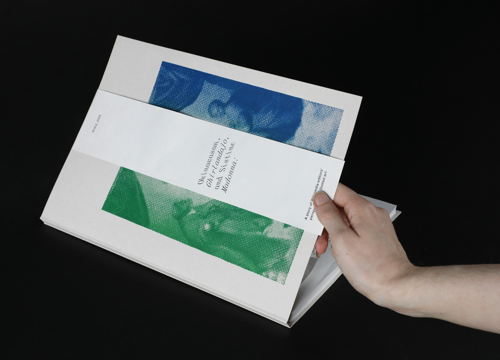
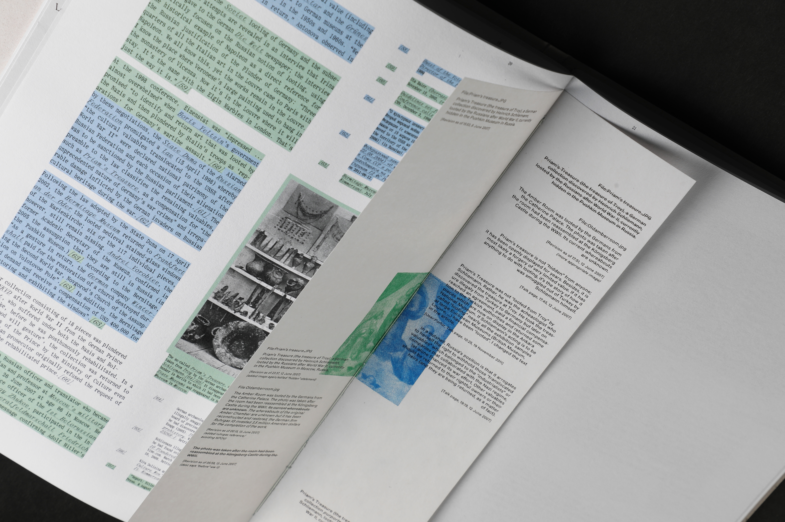
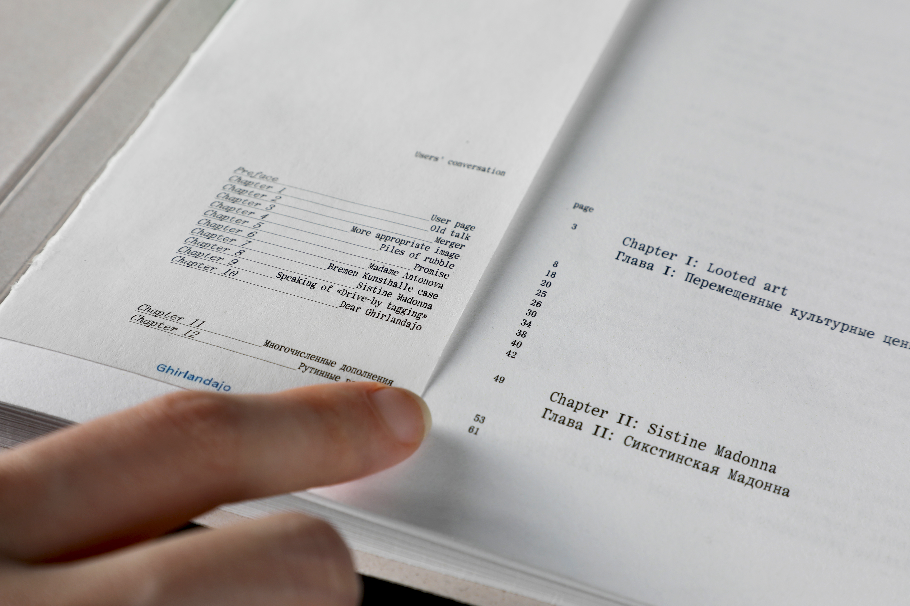
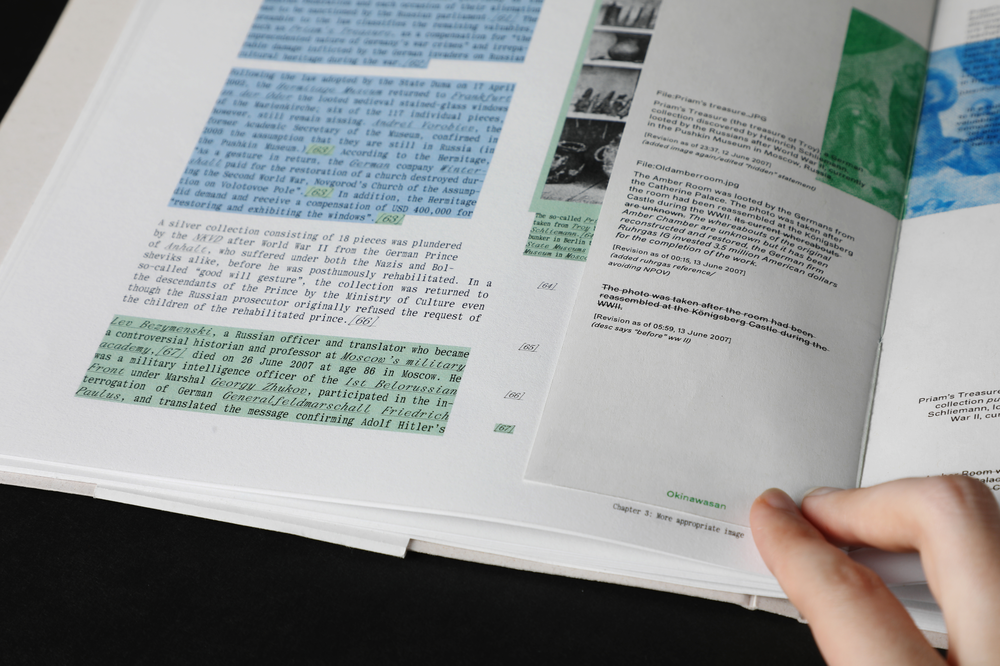
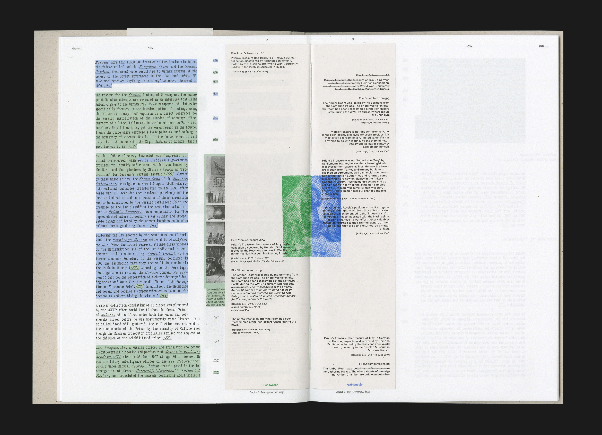
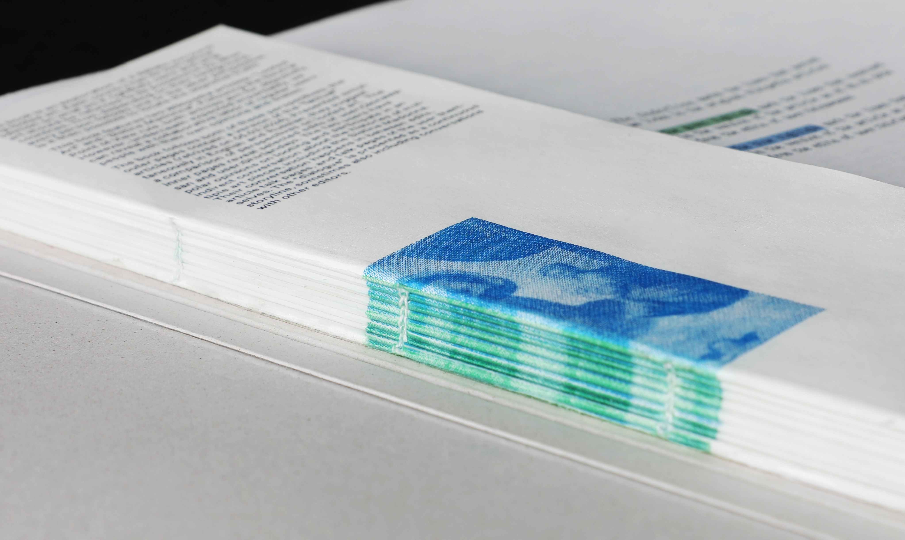
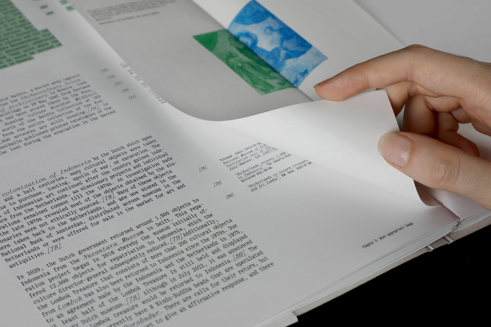
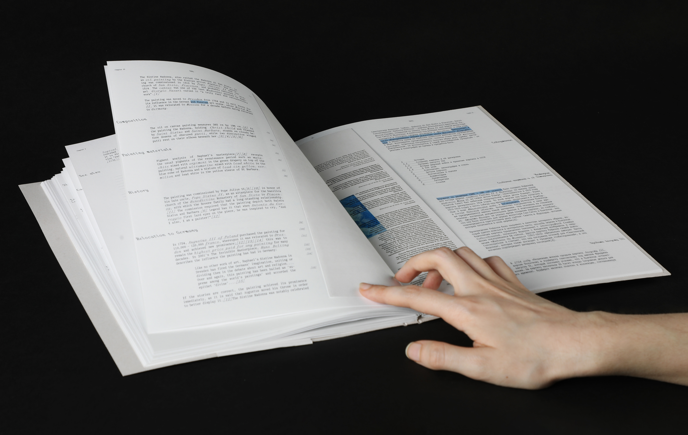
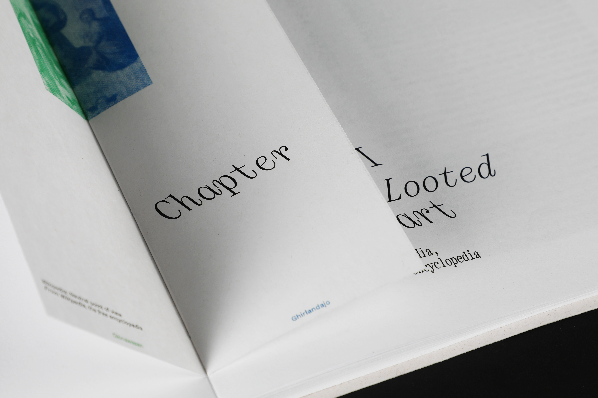

Publication
June 2024





Inner pages: RISO-printed in green and blue
Cover: Screen-printed gradient
Typefaces: Kommuna, Rag
Paper: Crush Grape 350g, Munken Kristall 90g, Nautilus 80g
Guided by Daniel Gross
ArtEZ
2024

Okinawasan, Ghirlandajo, and Sistine Madonna
explores a contentious world of looted art by following an indirect discussion of two Wikipedia editors with opposite views on the subject. Their joint efforts in creating the articles are arranged as a continuous storyline revealing how people's backgrounds affect a seemingly impartial narrative presented to the mass audience.
The book features English and Russian versions of two Wikipedia articles: “Looted Art” and “Sistine Madonna”, retrieved on the 5th of March 2024.


